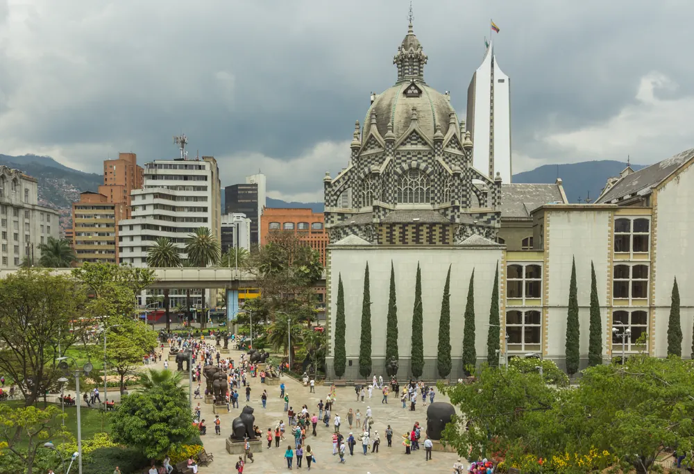

Plaza Botero y Metro/Metrocable están propuestos por la auditoría; todavía no sustituyen fichas de la selección vigente. Ninguna referencia está elegida, aprobada o generada mediante IA.
Plaza Botero
es
Plaza Botero
Plaza Botero reúne esculturas monumentales de Fernando Botero en el centro de Medellín, entre el Museo de Antioquia y el Palacio de la Cultura Rafael Uribe Uribe. Recorre la plaza para observar las obras y su relación con la arquitectura del entorno. La visita exterior y el acceso a las salas del museo son experiencias distintas que puedes combinar.
Ubica tu recorrido en el centro y consulta los accesos actuales a la plaza y al museo. Respeta las obras y el espacio de quienes viven y trabajan en el sector.
en
Plaza Botero
Plaza Botero brings together monumental sculptures by Fernando Botero in downtown Medellín, between Museo de Antioquia and the Rafael Uribe Uribe Palace of Culture. Walk through the square to explore the works and their architectural setting. The outdoor square and the museum galleries are separate visits that can be combined.
Plan your downtown route and check current access arrangements for the square and museum. Respect the artworks and the people who live and work nearby.
pt-BR
Plaza Botero
A Plaza Botero reúne esculturas monumentais de Fernando Botero no centro de Medellín, entre o Museo de Antioquia e o Palácio da Cultura Rafael Uribe Uribe. Caminhe pela praça para observar as obras e sua relação com a arquitetura ao redor. A visita à praça e o acesso às salas do museu são experiências distintas que podem ser combinadas.
Planeje seu percurso pelo centro e consulte as condições atuais de acesso à praça e ao museu. Respeite as obras e as pessoas que vivem e trabalham na região.
Referencias propuestas
Opción 1 · plaza-botero-2023
Apta para revisar: esculturas completas y plaza reconocible
La foto conserva las esculturas principales completas y su contexto urbano; no confundir la fachada lateral del Palacio con el Museo del fondo. Personas visibles en plaza pública. La licencia CC BY-SA del fotógrafo no se atribuye a Fernando Botero; uso contextual de obras permanentes revisado aparte, autorización individual de IA pendiente.
Contexto de esculturas permanentes de Fernando Botero y arquitectura exterior. Fuente primaria Ley23 art39 permite ciertas reproducciones de obras permanentes en plazas; registrar caso de uso y límites, no usar escultura aislada como activo3D/merch ni afirmar derechos del fotógrafo sobre escultura. No generada/ni aprobada.
Elegir y aprobar referencia/uso concreto antes de cualquier IA. Atribuir/enlazar licencia/declarar cambios cuando CC BY; BY-SA requiere licencia compatible del derivado. CC0 de foto no libera automáticamente obras representadas.
Solo contexto / limitada: opción 2
Opción 2 · plaza-palacio-2017
Secundaria contextual: domina Palacio; no primera opción para esculturas

Sebastian Reategui · 2017-04-11 · Ficha original · CC0 1.0. Reducción técnica sin recorte.
Plaza y esculturas visibles en parte inferior, con Palacio como sujeto dominante. Es un contexto urbano auténtico de Medellín, pero las obras quedan pequeñas. Útil como apoyo espacial y no como primera propuesta de tarjeta Plaza Botero.
Contexto de esculturas permanentes de Fernando Botero y arquitectura exterior. Fuente primaria Ley23 art39 permite ciertas reproducciones de obras permanentes en plazas; registrar caso de uso y límites, no usar escultura aislada como activo3D/merch ni afirmar derechos del fotógrafo sobre escultura. No generada/ni aprobada.
Elegir y aprobar referencia/uso concreto antes de cualquier IA. Atribuir/enlazar licencia/declarar cambios cuando CC BY; BY-SA requiere licencia compatible del derivado. CC0 de foto no libera automáticamente obras representadas.
Metro y Metrocable de Medellín
es
Metro y Metrocable de Medellín
El Metro y los cables aéreos permiten conocer el relieve del valle de Aburrá y forman parte de la identidad urbana de Medellín. Un recorrido combina estaciones, trenes y vistas de las laderas según la línea elegida. La línea J une San Javier y La Aurora; la línea L conecta Santo Domingo y Arví. El viaje en cable y la visita al Parque Arví son partes distintas del recorrido.
El sistema se extiende por varios municipios del valle. Consulta el mapa, el estado del servicio y las condiciones de cada línea antes de salir. Para llegar al circuito de arte y escaleras de Comuna 13, planea también el trayecto desde San Javier.
en
Medellín Metro and Metrocable
The Metro and aerial cable lines reveal the landscape of the Aburrá Valley and are part of Medellín’s urban identity. Depending on the line, a journey combines stations, trains and hillside views. Line J links San Javier and La Aurora; line L connects Santo Domingo and Arví. The cable journey and a visit to Parque Arví are separate parts of the trip.
The network extends across several valley municipalities. Check the map, service status and travel conditions for each line before setting out. To reach Comuna 13’s art and escalator circuit, also plan the onward journey from San Javier.
pt-BR
Metrô e Metrocable de Medellín
O metrô e os teleféricos permitem conhecer o relevo do vale do Aburrá e fazem parte da identidade urbana de Medellín. Conforme a linha escolhida, o percurso combina estações, trens e vistas das encostas. A linha J liga San Javier e La Aurora; a linha L conecta Santo Domingo e Arví. O trajeto de teleférico e a visita ao Parque Arví são partes distintas do passeio.
A rede abrange vários municípios do vale. Consulte o mapa, o funcionamento e as condições de viagem de cada linha antes de sair. Para chegar ao circuito de arte e escadas rolantes da Comuna 13, planeje também o trecho a partir de San Javier.
Referencias propuestas
Opción 1 · metro-caf-2026
Apta para revisar: tren de Medellín claramente identificable
Frente, laterales del tren, catenaria y skyline reconocibles; destino Niquía y símbolo del Metro verifican sistema local. Coltejer al fondo aporta identidad Medellín. No se infiere estación de toma exacta sin evidencia adicional. Imagen histórica de enero2026; no certifica estado actual de servicio.
Ficha Commons identifica Metro de Medellín, contrastar tren/estación visualmente tras descarga. Santo Domingo es nodo de Metrocable, no estación Arví; no confundir con otros sistemas ni líneas J/L.
Elegir y aprobar referencia/uso concreto antes de cualquier IA. Atribuir/enlazar licencia/declarar cambios cuando CC BY; BY-SA requiere licencia compatible del derivado. CC0 de foto no libera automáticamente obras representadas.
Solo contexto / limitada: opción 2
Opción 2 · metro-santo-domingo-2020
No recomendada principal: escalera técnica ocupa el encuadre
Cabinas reales con marca Metro a la izquierda identificables, pero escalera técnica amarilla y soporte central dominan la imagen. La fuente identifica Santo Domingo; no rotular Arví ni líneaJ. Se conserva como referencia secundaria del mecanismo/estación, no sustituye una vista icónica clara del recorrido.
Ficha Commons identifica Metro de Medellín, contrastar tren/estación visualmente tras descarga. Santo Domingo es nodo de Metrocable, no estación Arví; no confundir con otros sistemas ni líneas J/L.
Elegir y aprobar referencia/uso concreto antes de cualquier IA. Atribuir/enlazar licencia/declarar cambios cuando CC BY; BY-SA requiere licencia compatible del derivado. CC0 de foto no libera automáticamente obras representadas.
Tripadvisor: Descubrimiento del sujeto/contexto, sin reutilizar fotografías ni inferir permisos
Tripadvisor: Descubrimiento de Metro/Metrocable como experiencia; buscador muestra resultados, apertura directa falló, no ranking medido
WIPO Lex, Ley23/1982 versión referida2017: Artículo39: reproducciones de obras permanentes en espacios públicos, arquitectura exterior. Fuente jurídica de alcance específico, no licencia del escultor ni aprobación universal de una transformación IA.


.jpg){kind=link}